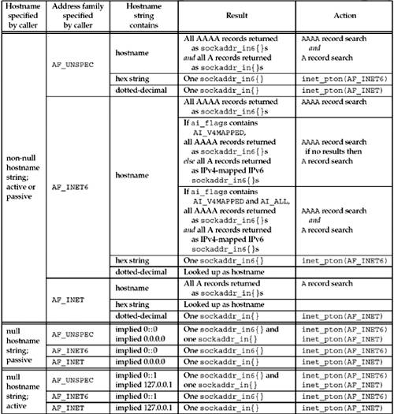

11.9 getaddrinfo Function: IPv6
The POSIX specification defines the getaddrinfo function and the information it returns for both IPv4 and IPv6. We note the following points before summarizing these return values in Figure 11.8.

getaddrinfo is dealing with two different inputs: the type of socket address structure the caller wants back and the type of records that should be searched for in the DNS or other database. The address family in the hints structure provided by the caller specifies the type of socket address structure that the caller expects to be returned. If the caller specifies AF_INET, the function must not return any sockaddr_in6 structures; if the caller specifies AF_INET6, the function must not return any sockaddr_in structures. POSIX says that specifying AF_UNSPEC will return addresses that can be used with any protocol family that can be used with the hostname and service name. This implies that if a host has both AAAA records and A records, the AAAA records are returned as sockaddr_in6 structures and the A records are returned as sockaddr_in structures. It makes no sense to also return the A records as IPv4-mapped IPv6 addresses in sockaddr_in6 structures because no additional information is being returned: These addresses are already being returned in sockaddr_in structures. This statement in the POSIX specification also implies that if the AI_PASSIVE flag is specified without a hostname, then the IPv6 wildcard address (IN6ADDR_ANY_INIT or 0::0) should be returned as a sockaddr_in6 structure, along with the IPv4 wildcard address (INADDR_ANY or 0.0.0.0), which is returned as a sockaddr_in structure. It also makes sense to return the IPv6 wildcard address first because we will see in Section 12.2 that an IPv6 server socket can handle both IPv6 and IPv4 clients on a dual-stack host. The address family specified in the hint structure's ai_family member, along with the flags such as AI_V4MAPPED and AI_ALL specified in the ai_flags member, dictate the type of records that are searched for in the DNS (A and/or AAAA) and what type of addresses are returned (IPv4, IPv6, and/or IPv4-mapped IPv6). We summarize this in Figure 11.8. The hostname can also be either an IPv6 hex string or an IPv4 dotted-decimal string. The validity of this string depends on the address family specified by the caller. An IPv6 hex string is not acceptable if AF_INET is specified, and an IPv4 dotted-decimal string is not acceptable if AF_INET6 is specified. But, if AF_UNSPEC is specified, either is acceptable and the appropriate type of socket address structure is returned. One could argue that if AF_INET6 is specified, then a dotted-decimal string should be returned as an IPv4-mapped IPv6 address in a sockaddr_in6 structure. But, another way to obtain this result is to prefix the dotted-decimal string with 0::ffff:.
Figure 11.8 summarizes how we expect getaddrinfo to handle IPv4 and IPv6 addresses. The "Result" column is what we want returned to the caller, given the variables in the first three columns. The "Action" column is how we obtain this result.
Note that Figure 11.8 specifies only how getaddrinfo handles IPv4 and IPv6; that is, the number of addresses returned to the caller. The actual number of addrinfo structures returned to the caller also depends on the socket type specified and the service name, as summarized earlier in Figure 11.6.
 |